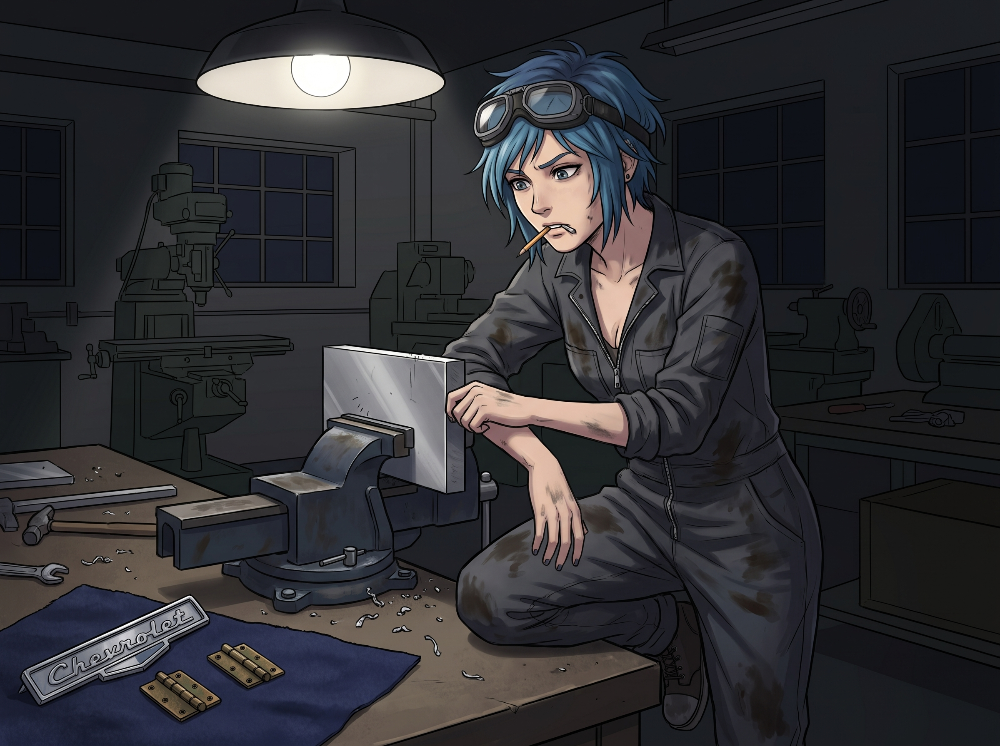

車間裡的心意

週五晚上的波特蘭社區學院機械實訓車間裡，大部分工位早已熄燈，只剩下東側靠窗的重型工作台上方還亮著一盞散發著白光的吊臂工作燈。
空氣裡瀰漫著金屬切削液的微甜味、冷軋鋼板的鐵鏽味與防銹油的清冽香氣。
Chloe 穿著沾滿油漬的深灰色連體工裝服，拉鍊拉到鎖骨下方，額前微亂的藍髮被護目鏡緊緊壓住。她嘴裡叼著一小截木工鉛筆，單膝抵在工作台邊緣，眼神專注地盯著台鉗上夾著的一塊厚鋁板。
在工作台的角落裡，整齊擺放著她這週從廢品拆解堆和老車零件庫裡精心淘來的幾件「珍寶」：一塊從 1968 年款雪佛蘭 Impala 報廢車門上完整拆下來的復古「Chevrolet」立體鍍鉻草體金屬銘牌；兩枚表面帶著天然氧化包漿、開合阻尼感極其順滑的實心老黃銅微型活頁鉸鏈；以及一小塊她偷偷找 Kate 要來的、用植物染料染成深海軍藍色的加厚純羊毛氈布。
「好了，考菲爾德長官，」Chloe 拿下嘴裡的鉛筆，在鋁板內側精準畫下兩道彎折線，嘴角掛著一抹專注的笑意，「讓妳看看什麼叫真正的防彈級暗房裝備。」
她拿起一把重型鈑金圓頭錘，墊上硬木塊，開始沿著預先劃好的折彎線均勻敲打。
「叮、當、叮、當——」
清脆而富有節奏的金屬撞擊聲在空曠的車間裡迴盪。Chloe 的動作極其俐落，手腕每一次發力都精準無比，將原本平整堅硬的航空級鋁合金板一點點敲打出圓潤流暢的弧形邊角。她不希望邊緣有一絲尖銳的毛刺，甚至拿出一支極細的鋼銼和水砂紙，低著頭反覆打磨著每一個倒角，直到指腹撫摸上去比絲綢還要平滑。
打孔、攻絲、鉚接。
兩枚泛著溫潤暗金色的黃銅小鉸鏈被用微型黃銅鉚釘死死固定在盒身與盒蓋的後側。隨著「咔噠」一聲輕響，上下盒蓋完美咬合，接縫處嚴密得連一張相紙都插不進去。
最核心的步驟是外觀裝飾。
Chloe 將那塊擦拭得鋥亮、泛著復古冷光的「Chevrolet」立體銘牌精準鑲嵌在盒蓋的正中央，並在銘牌右下角最不起眼的角落裡，用極細的刻刀手動刻上了一個只有指甲蓋大小、標誌性的「骷髏眼瞎笑臉」塗鴉。
接著，她拿出專用環氧膠水，將那塊柔軟厚實的深藍色羊毛氈一絲不苟地貼滿了眼鏡盒的整個內襯。微絨的氈布將冰冷的金屬內壁包裹得格外溫暖，足以保證那副脆弱的黑框眼鏡即使從三米高的地方摔下來，鏡片也不會受到絲毫刮擦與震動。
全部完工時，車間窗外的天色已經徹底黑透。
Chloe 摘下護目鏡，長長舒了一口氣。她用手背擦了擦額頭上的細汗，順便留下了一小道灰黑色的機油印子，隨後用拇指輕輕按開了眼鏡盒的黃銅卡扣。
「啪嗒。」
開合手感沉穩厚重，帶著純機械結構特有的清脆反饋。深藍色的羊毛氈內襯在工作燈下散發著柔軟的光澤，與外殼粗獷硬朗的拉絲金屬和復古鍍鉻銘牌形成了奇妙而完美的對比。
Chloe 笑了笑，從口袋裡掏出一張 Max 隨手撕下來的黑白印樣邊角料，用油性筆在背面歪歪扭扭地寫下一行小字，塞進了天鵝絨內襯的夾層裡：
「專用防護外殼：耐高溫、防重擊、抗暗房酸液腐蝕。
僅供 Maxine Caulfield 長官的黑框眼鏡專用。
—— 由妳的專屬首席機械師手工打造。」
她合上金屬盒，將這個沉甸甸的小物件塞進工裝外套最靠近心臟的內側口袋裡，抓起車鑰匙吹著口哨走出車間，跳上了那輛發動機隨時準備轟鳴的老皮卡，朝著珍珠區溫暖的 Loft 飛馳而去。